Capture your screen, annotate with precision, extract text, and organize your ideas in smart folders. SnapFlow is more than a screenshot app, it's a complete visual workspace designed to streamline your workflow.
A powerful alternative to the default system tool. Built for students, creators, and teams who want to capture and organize their screen seamlessly.
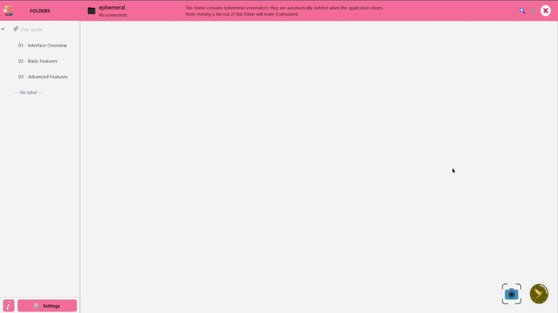
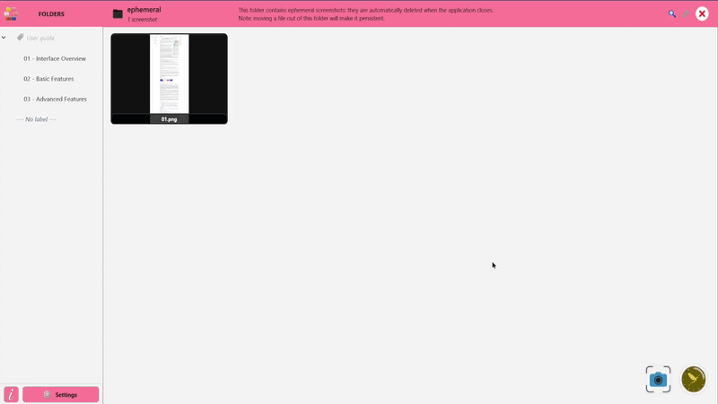
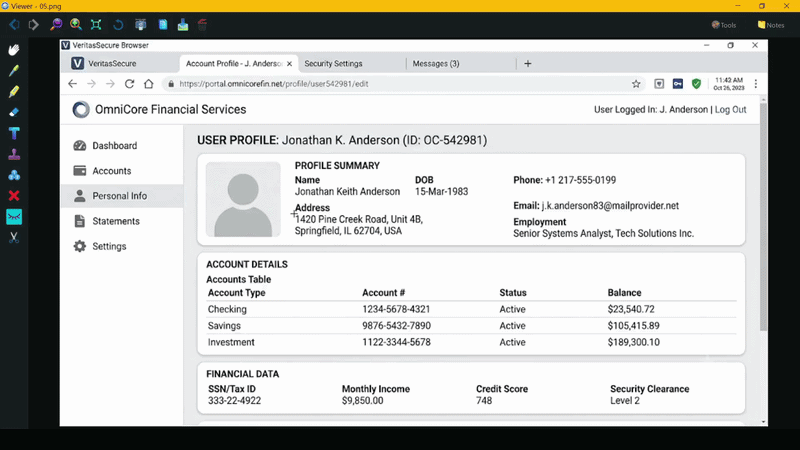
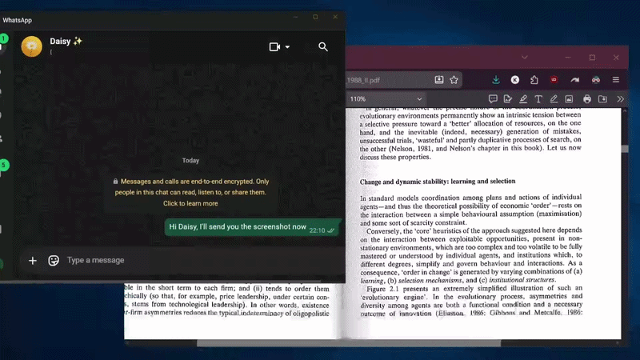
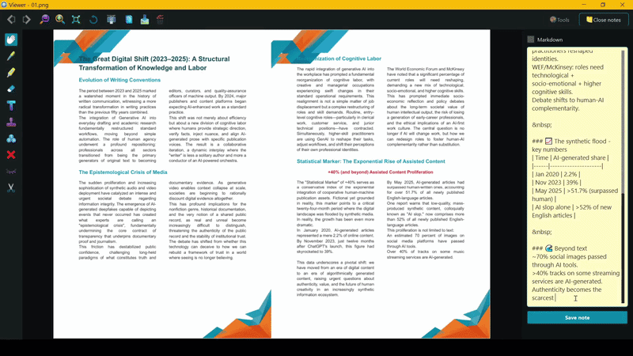
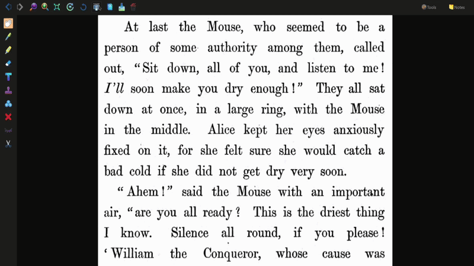
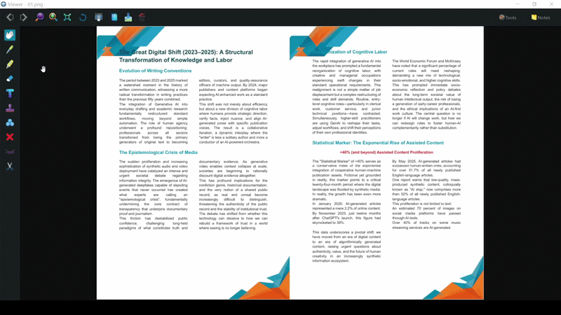
We know how sensitive your screen data can be. Text extraction (OCR) and all advanced features run securely on your local PC. No screenshots are ever sent to unknown servers. Work, annotate, and organize in complete privacy.
A look at SnapFlow's clean interface and powerful tools.
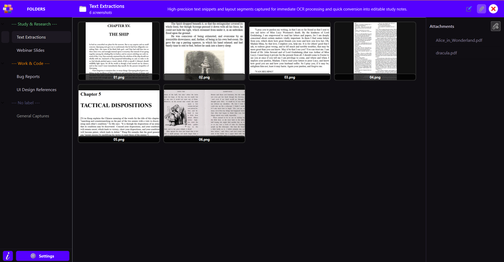
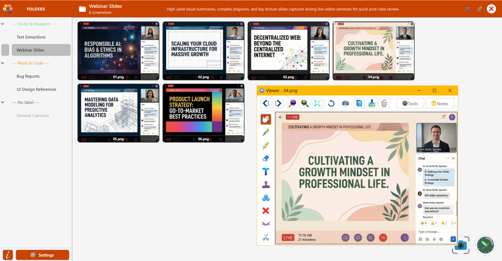
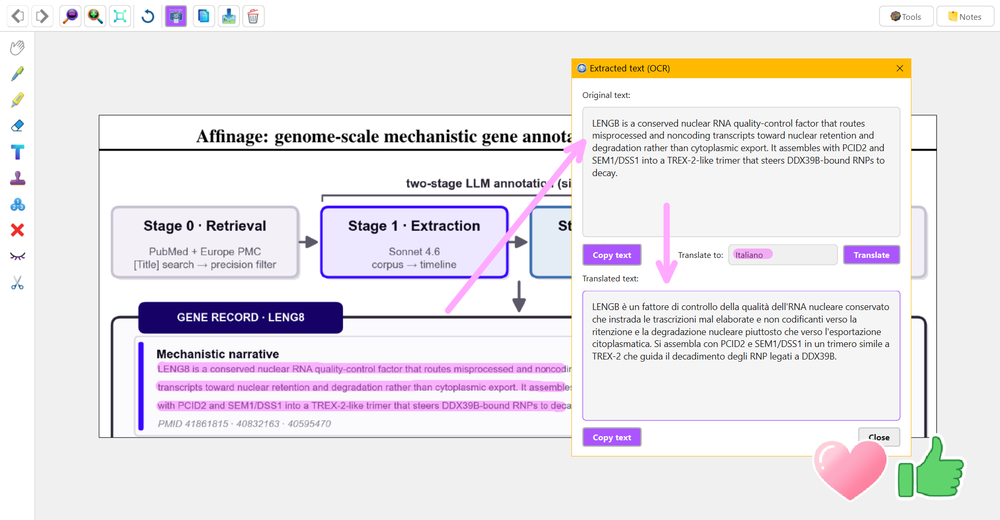
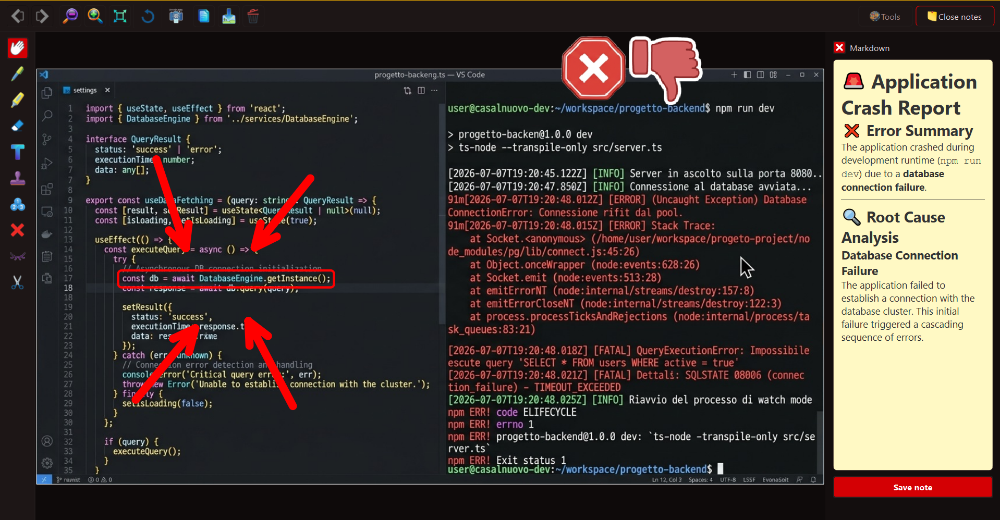
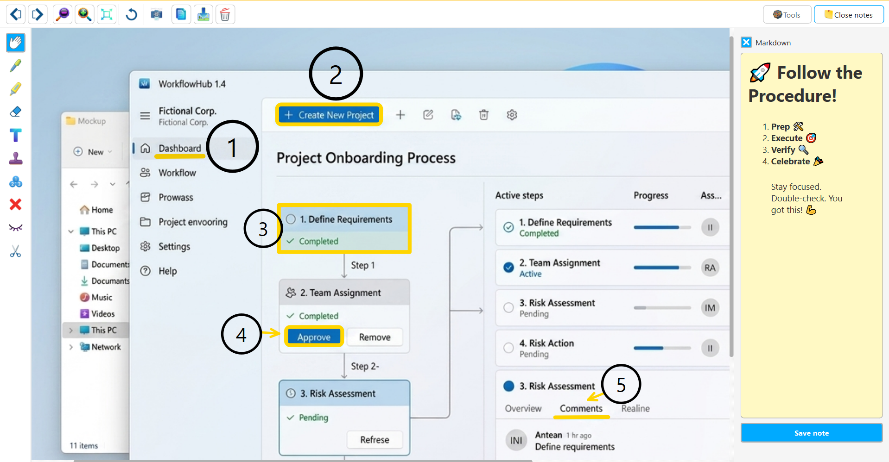
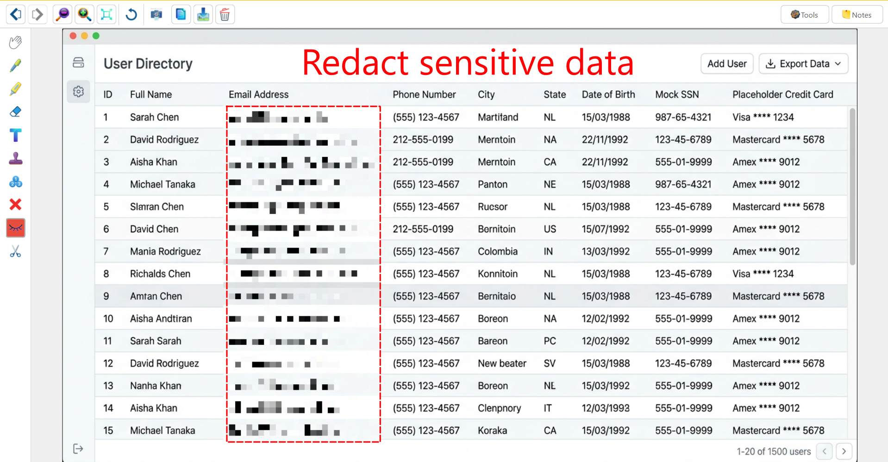
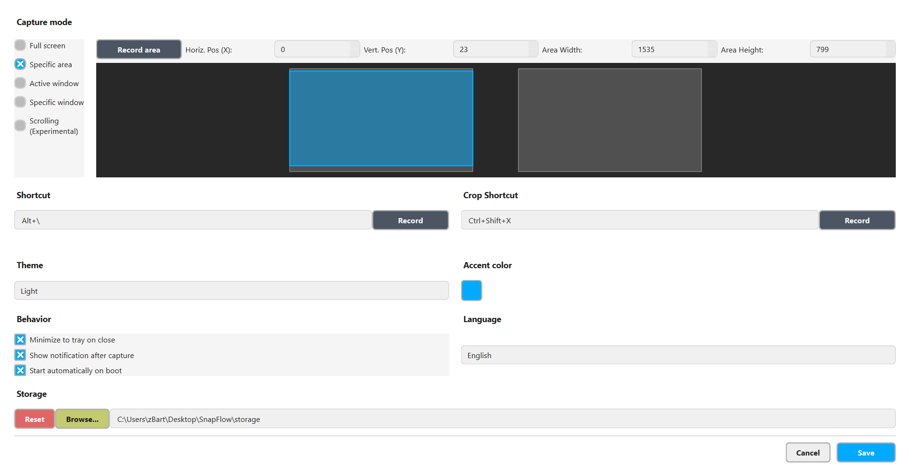
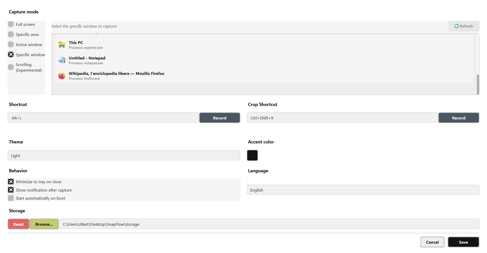
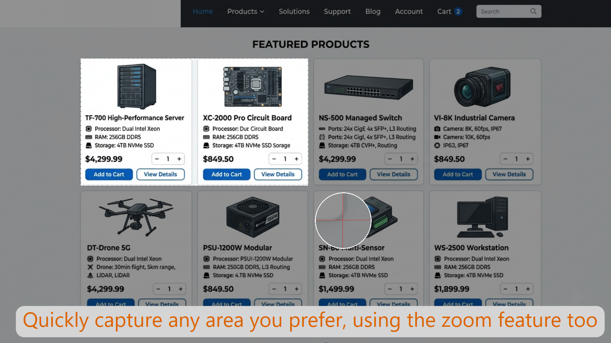
Have questions, feedback, or need support? Drop me an email.